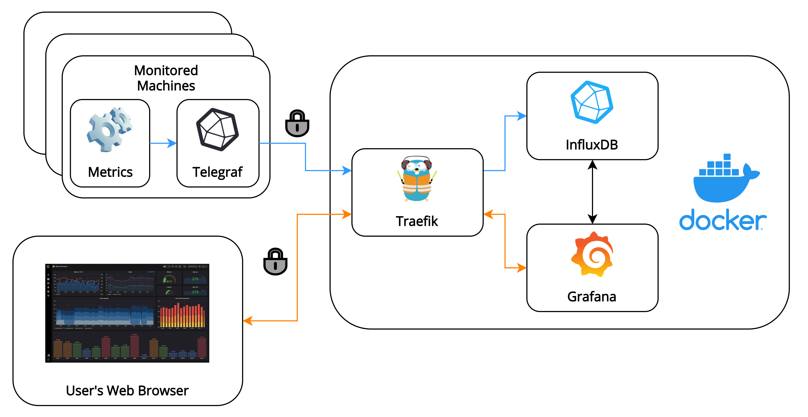

9 minutes
Setting up a TLS-Secured Monitoring Solution in Docker using InfluxDB, Grafana and Traefik

Motivation
During my last internship, I’ve been tasked with designing and deploying infrastructure for monitoring a cluster of machines that were used for performance testing. I wrote a blog post detailing high-level choices about it which you can check out here. The post also includes justifications for why I chose to deploy everything in Docker, and why I chose to work with Grafana and InfluxDB as the front-end and time-series database, respectively.
It’s relatively straightforward to write and deploy a Docker compose application with just Grafana and InfluxDB. There are many ready-made docker-compose.yml files that can be found online, as well as various tutorials and blog posts which explain the details. The main difficulty was in getting the application secured by issuing and renewing TLS certificates. My initial idea was to manually issue and set TLS certificates as described e.g. in the InfluxDB documentation, but this kind of approach wouldn’t be maintainable in the long run.
This is where Traefik came in - it’s an edge router which acts as a reverse proxy into your Docker compose application. More importantly, it aims to “make networking boring”, which in our case is achieved by automatically issuing and renewing TLS certificates from Let’s Encrypt - perfect! I’ll describe how to set it up in this post.
Throughout the post, I’ll also describe small improvements that could be made to the deployment I describe, as well as describe small quirks I found when working with the described tools. Note that Traefik works with all Docker containers, so this post can still apply if you for example use Prometheus instead of InfluxDB as your time-series database.
For the finished all-in-one deployment of Grafana, InfluxDB and Traefik that this post will build up to, I’ve provided this GitHub repo: Secure Monitoring Solution in Docker.
Setting up Grafana and InfluxDB
Setting up Grafana and InfluxDB on Docker is pretty straightforward. Here’s a docker-compose.yml that will do just that:
version: "3.8"
services:
influxdb:
container_name: influxdb
image: influxdb:1.8.3-alpine
ports:
- 8086:8086
volumes:
- influxdb-data:/var/lib/influxdb
environment:
INFLUXDB_DB: example_db
INFLUXDB_ADMIN_USER: admin
INFLUXDB_ADMIN_PASSWORD: influxdb-admin
networks:
- monitoring
grafana:
container_name: grafana
image: grafana/grafana:7.3.4
ports:
- 3000:3000
volumes:
- grafana-data:/var/lib/grafana
environment:
GF_SECURITY_ADMIN_USER: grafana
GF_SECURITY_ADMIN_PASSWORD: grafana-admin
networks:
- monitoring
depends_on:
- influxdb
networks:
monitoring:
driver: bridge
volumes:
influxdb-data:
external: false
grafana-data:
external: false
This simple Docker compose application creates Grafana and InfluxDB containers, creates persistent volumes for them so data will be saved if they’re restarted, and sets up a networking bridge so the containers can communicate between each other (in favour of the legacy links command that some old setups use).
To start up the containers, run:
docker-compose up
Grafana can then be accessed at http://localhost:3000 and InfluxDB at http://localhost:8086. You can go ahead and send some data to InfluxDB (e.g. with Telegraf) to make sure it works. InfluxDB will need to be set up as a data source manually in Grafana, however it can be automated as I’ll describe later.
The database specified by the INFLUXDB_DB environment variable will be created when InfluxDB is initialised. This is poorly documented sadly, but most of the details are included in this InfluxDB PR.
The admin account details are provided in the docker-compose.yml above and should be changed to something secure. For ideas on how to store them securely, I recommend looking at Docker secrets or Ansible Vault.
Additional configuration
I’ve decided to use the alpine image variant for InfluxDB, mostly due to its smaller footprint. It’ll be sufficient for most uses. Grafana uses an Alpine base image by default, and that’s also the one that’s recommended. The “Image Variants” section of the InfluxDB docker image documentation explains the image variants in more depth.
This kind of configuration is the foundation of your Grafana and InfluxDB monitoring setup. For now, feel free to change any settings using the appropriate environment variables - I found this way of configuring containers to be much cleaner than mounting a config file into the container, especially once we add Traefik with its labels to the deployment.
To configure Grafana and InfluxDB using environment variables:
-
InfluxDB: the format for the environment variables is
INFLUXDB_SECTION_NAME, and all dashes (-) are replaced with underscores (_). Certain settings don’t have sections, in which case the section part can be omitted. -
Grafana: the format for the environment variables is
GF_SECTION_NAME, where full stops (.) and dashes (-) should be replaced by underscores (_).
Securing containers using Traefik
Initially, I found how to secure the described Docker compose deployment with Traefik from Jan Grzegorowski’s blog post. I highly recommend reading his post if anything is not clear here (I won’t be offended).
As described already, Traefik is a cloud-native edge router which will serve as a reverse proxy in our Docker compose application. It will automatically issue and renew TLS certificates, so the traffic to and from our Docker containers will be encrypted. Luckily it’s also quite straightforward to configure using labels, and the entire configuration can be kept inside one docker-compose.yml file.
Adapting the above example docker-compose.yml to work with Traefik, we get:
version: "3.8"
services:
influxdb:
container_name: influxdb
image: influxdb:1.8.3-alpine
volumes:
- influxdb-data:/var/lib/influxdb
networks:
- monitoring
labels:
- "traefik.http.routers.influxdb-ssl.entryPoints=influxdb-port"
- "traefik.http.routers.influxdb-ssl.rule=host(`YOUR_DOMAIN`)"
- "traefik.http.routers.influxdb-ssl.tls=true"
- "traefik.http.routers.influxdb-ssl.tls.certResolver=lets-encrypt-ssl"
- "traefik.http.routers.influxdb-ssl.service=influxdb-ssl"
- "traefik.http.services.influxdb-ssl.loadBalancer.server.port=8086"
grafana:
container_name: grafana
image: grafana/grafana:7.3.4
volumes:
- grafana-data:/var/lib/grafana
networks:
- monitoring
depends_on:
- influxdb
labels:
- "traefik.http.routers.grafana.entryPoints=port80"
- "traefik.http.routers.grafana.rule=host(`YOUR_DOMAIN`)"
- "traefik.http.routers.grafana.middlewares=grafana-redirect"
- "traefik.http.middlewares.grafana-redirect.redirectScheme.scheme=https"
- "traefik.http.middlewares.grafana-redirect.redirectScheme.permanent=true"
- "traefik.http.routers.grafana-ssl.entryPoints=port443"
- "traefik.http.routers.grafana-ssl.rule=host(`YOUR_DOMAIN`)"
- "traefik.http.routers.grafana-ssl.tls=true"
- "traefik.http.routers.grafana-ssl.tls.certResolver=lets-encrypt-ssl"
- "traefik.http.routers.grafana-ssl.service=grafana-ssl"
- "traefik.http.services.grafana-ssl.loadBalancer.server.port=3000"
traefik:
container_name: traefik
image: traefik:v2.3.4
volumes:
- traefik-data:/letsencrypt
- /var/run/docker.sock:/var/run/docker.sock
networks:
- monitoring
ports:
- "80:80"
- "443:443"
- "8086:8086"
command:
- "--providers.docker=true"
- "--entryPoints.port443.address=:443"
- "--entryPoints.port80.address=:80"
- "--entryPoints.influxdb-port.address=:8086"
- "--certificatesResolvers.lets-encrypt-ssl.acme.tlsChallenge=true"
- "--certificatesResolvers.lets-encrypt-ssl.acme.storage=/letsencrypt/acme.json"
- "--certificatesresolvers.lets-encrypt-ssl.acme.caServer=https://acme-staging-v02.api.letsencrypt.org/directory"
- "--certificatesResolvers.lets-encrypt-ssl.acme.email=YOUR-EMAIL@website.com"
networks:
monitoring:
driver: bridge
volumes:
influxdb-data:
external: false
grafana-data:
external: false
traefik-data:
external: false
There’s quite a lot going on here! I’ll try to break it down bit by bit.
Notice that the ports for the Grafana and InfluxDB containers have been moved to the Traefik container. This is because Traefik will now act as an entry point for our Docker compose application, and will route traffic to other containers.
Traefik labels
We create some labels in the InfluxDB container for our Traefik configuration:
-
- "traefik.http.routers.influxdb-ssl.entryPoints=influxdb-port": set the container’s “entrypoint” using a Traefik router. It corresponds to the appropriate label in the Traefik container - here I called itinfluxdb-port. The fourth part of the label can have any arbitrary name (here I choseinfluxdb-ssl). -
- "traefik.http.routers.influxdb-ssl.rule=host(`YOUR_DOMAIN`)": the start of the TLS configuration - fill in the domain of where this application will be hosted. If you’re testing locally, it can be set tolocalhostor variations of it (e.g.monitoring.docker.localhost). -
- "traefik.http.routers.influxdb-ssl.tls=true": flag for enabling TLS for this container. Changing this tofalsecan be useful when you’re testing the deployment locally, and want to send data to InfluxDB from applications that can’t be set to ignore TLS certificates. This is because TLS certificates can’t be issued forlocalhostdomains by Traefik as they don’t end with a valid top-level domain. -
- "traefik.http.routers.influxdb-ssl.tls.certResolver=lets-encrypt-ssl": the name of the certificate resolver - make sure it matches the name of the certificate resolver set in the Traefik container. -
- "traefik.http.routers.influxdb-ssl.service=influxdb-ssl": set the name of the Traefik service for this container. This will be the name that the other labels in this container have been given. -
- "traefik.http.services.influxdb-ssl.loadBalancer.server.port=8086": sets any ports that Traefik should route traffic to for this container. This is done using a Traefik service, and is effectively a way to tell Traefik how to reach the service. This will be specified by the container’s Docker image, so be sure to check which port to use for any other images.
Traefik with other containers
The Grafana TLS configuration is largely the same, with the appropriate port numbers and router names changed.
Since we want Grafana to show up when the domain is visited, the following labels handle HTTP to HTTPS redirection using Traefik:
- "traefik.http.routers.grafana.entryPoints=port80"
- "traefik.http.routers.grafana.rule=host(`YOUR_DOMAIN`)"
- "traefik.http.routers.grafana.middlewares=grafana-redirect"
- "traefik.http.middlewares.grafana-redirect.redirectScheme.scheme=https"
- "traefik.http.middlewares.grafana-redirect.redirectScheme.permanent=true"
Here we set up Traefik middlewares which are a means to tweak requests (e.g. redirect from one port to another) before it gets passed to the Traefik service. The configuration is fairly straightforward.
Traefik container configuration
Finally, we set up the actual Traefik container:
traefik:
container_name: traefik
image: traefik:v2.3.4
volumes:
- traefik-data:/letsencrypt
- /var/run/docker.sock:/var/run/docker.sock
networks:
- monitoring
ports:
- "80:80"
- "443:443"
- "8086:8086"
First, we set up a persistent volume for the /letencrypt directory which will store any TLS certificates that Traefik obtains from Let’s Encrypt. This is important so that certificates don’t have to be reissued when the container is restarted.
Next, we need to mount the Docker socket into the container so that Traefik can get Docker’s dynamic configuration.
We also open all the ports whose traffic we want to route through Traefik.
command:
- "--providers.docker=true"
- "--entryPoints.port443.address=:443"
- "--entryPoints.port80.address=:80"
- "--entryPoints.influxdb-port.address=:8086"
We set the providers.docker command to true since we’re using Docker. We also set up some Traefik entrypoints to open connections for incoming requests, which correspond to the ports we’ve opened in the container.
- "--certificatesResolvers.lets-encrypt-ssl.acme.tlsChallenge=true"
- "--certificatesResolvers.lets-encrypt-ssl.acme.storage=/letsencrypt/acme.json"
- "--certificatesresolvers.lets-encrypt-ssl.acme.caServer=https://acme-staging-v02.api.letsencrypt.org/directory"
- "--certificatesResolvers.lets-encrypt-ssl.acme.email=YOUR-EMAIL@website.com"
Finally we set up the certificate resolver that will renew and issue our TLS certificates. Note that the second part of these labels can be set to any arbitrary name, and isn’t used anywhere.
The caServer label determines which Certificate Authority to request TLS certificates from. Since we’re getting them from Let’s Encrypt, this can either be set to Let’s Encrypt’s staging (https://acme-staging-v02.api.letsencrypt.org/directory) server or production (https://acme-v02.api.letsencrypt.org/directory) server. There is a limit of 5 certificates per week from Let’s Encrypt’s production server, so it may be a good idea to use the staging server for testing. For more info on the Let’s Encrypt staging environment and Traefik, check the note under this Traefik docs page.
The email label is necessary so that Let’s Encrypt can contact you about expiring certificates and any issues related to your account.
That’s it! Your Docker containers are now secured, and traffic that will be sent to and from them will be encrypted.
Further improvements
There are a couple of small improvements that can be made to the Docker application at this point. Many of the improvements have been implemented in the mentioned GitHub repository mentioned at the start of this post.
-
volumesconfigurations can be expanded to their verbose form for better readability. This can help with understanding what kind of mount is used, as it’s not immediately obvious with the short syntax. -
An
.envfile can be added alongside thedocker-compose.ymlfile to store some common variables which are used throughout thedocker-compose.yml, to avoid repetition. -
restart: alwayscan be added to the Docker containers so that they’re restarted on boot. -
Grafana can automatically set up data sources specified under
grafana/provisioning/datasources. Other aspects can also be provisioned in a similar manner, including plugins, dashboards, and alert notification channels. For more info, see Grafana provisoning. -
InfluxDB will run shell scripts located in the
docker-entrypoint-initdb.ddirectory on startup. InfluxQL.iqlfiles can also be included there, but I wouldn’t recommend it as they’re much less flexible than shell scripts and can lead to non-obvious issues.